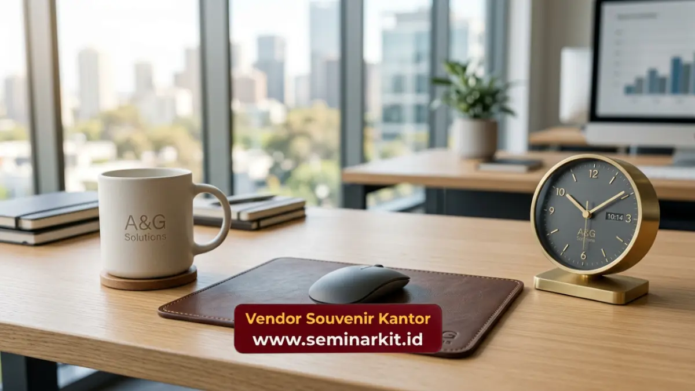

Souvenir corporate untuk karyawan adalah barang bermerek logo perusahaan yang diberikan sebagai bentuk apresiasi atas kontribusi, pencapaian, atau sebagai bagian dari proses onboarding karyawan baru.
Souvenir ini berperan memperkuat rasa memiliki karyawan terhadap perusahaan sekaligus menjaga konsistensi identitas brand secara internal.
- Souvenir corporate untuk karyawan umumnya berupa barang fungsional harian seperti tumbler, tas, atau alat tulis.
- Onboarding kit menjadi salah satu penerapan populer souvenir corporate bagi karyawan baru.
- Souvenir karyawan berperan memperkuat employee engagement dan rasa memiliki terhadap perusahaan.
- Pemilihan desain yang konsisten dengan identitas brand memperkuat budaya perusahaan.
- vendorsouvenirkantor.web.id menyediakan layanan custom souvenir corporate untuk kebutuhan internal perusahaan.
Apa Manfaat Souvenir Corporate bagi Karyawan?
Souvenir corporate bagi karyawan memberikan manfaat berupa peningkatan rasa dihargai, penguatan identitas kolektif tim, serta media informal untuk memperkenalkan nilai dan budaya perusahaan kepada karyawan baru.
Selain manfaat emosional, souvenir corporate juga berfungsi praktis dalam mendukung aktivitas kerja sehari-hari, seperti tumbler untuk kebutuhan minum di kantor atau tas laptop untuk mobilitas kerja karyawan.
Bagaimana Souvenir Corporate Mendukung Employee Engagement?
Souvenir corporate mendukung employee engagement dengan menciptakan momen positif yang dikaitkan langsung dengan perusahaan. Ketika karyawan menerima barang berkualitas dengan identitas brand yang jelas, hal ini menumbuhkan rasa bangga menjadi bagian dari organisasi tersebut.
Souvenir yang diberikan pada momen pencapaian tertentu, seperti penyelesaian target tim atau ulang tahun kerja karyawan, juga memperkuat asosiasi positif antara pencapaian pribadi dan perusahaan.

Kapan Waktu Tepat Memberikan Souvenir Corporate kepada Karyawan?
Waktu tepat memberikan souvenir corporate kepada karyawan adalah pada momen onboarding karyawan baru, perayaan hari jadi perusahaan, pencapaian target kerja, atau sebagai bagian dari program apresiasi tahunan.
Pemberian pada momen onboarding khususnya berperan penting karena menjadi kesan pertama karyawan baru terhadap budaya dan profesionalisme perusahaan sejak hari pertama bekerja.
Apa Peran Souvenir Corporate dalam Proses Onboarding?
Souvenir corporate dalam proses onboarding berperan sebagai welcome kit yang membantu karyawan baru merasa diterima dan menjadi bagian dari tim sejak awal bergabung. Onboarding kit biasanya berisi kombinasi barang fungsional seperti notebook, pena, dan tumbler dengan logo perusahaan.
Kehadiran onboarding kit yang rapi dan berkualitas turut mencerminkan tingkat profesionalisme perusahaan di mata karyawan baru, yang dapat memengaruhi kesan awal mereka terhadap lingkungan kerja.
Apa Saja Jenis Souvenir Corporate yang Cocok untuk Karyawan?
Jenis souvenir corporate yang cocok untuk karyawan mencakup barang fungsional seperti tumbler, tas ransel, alat tulis, dan power bank, serta barang tematik seperti merchandise khusus perayaan tertentu.
Pemilihan jenis produk sebaiknya mempertimbangkan kebutuhan sehari-hari karyawan agar souvenir tersebut benar-benar digunakan, bukan sekadar disimpan tanpa fungsi praktis.
Perusahaan yang ingin menghadirkan souvenir corporate untuk karyawan dengan kualitas terjamin dan proses custom logo yang mudah dapat berkonsultasi langsung dengan tim vendorsouvenirkantor.web.id sesuai kebutuhan dan jumlah karyawan perusahaan Anda.
Souvenir corporate untuk karyawan merupakan strategi efektif dalam membangun loyalitas dan employee engagement melalui pendekatan yang praktis dan berkesan.
Pemilihan momen dan jenis produk yang tepat akan memaksimalkan dampak positif souvenir tersebut bagi budaya internal perusahaan.
Konsultasikan kebutuhan souvenir corporate untuk karyawan perusahaan Anda bersama vendorsouvenirkantor.web.id sekarang.

Banner promosi: klik gambar untuk langsung terhubung ke WhatsApp tim sales.